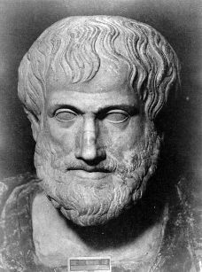

Aristo (M.Ö. 384-322)

Milattan önce dördüncü asýrda yaþamýþ antik çað Yunan filozofudur. Eflatun'un talebesi ve Büyük Ýskender'in hocasýdýr. Eski Yunan felsefesi onunla en yüksek seviyeye ulaþmýþtýr. Bir çok ilim dalýnýn kurucusu olarak kabul görmüþtür. Eserlerinin büyük bir bölümü Arapça'ya çevrilmiþ olup, daha sonraki dönemde felsefe ile uðraþan Ýslam alimlerini büyük ölçüde etkilemiþtir. Risale-i Nur'da, "Ýnsaniyetin gàyetü'l-gàyâtý, 'teþebbüh-ü bilvâcib'dir, yani Vâcibü'l-Vücuda benzemektir." (Sözler, s. 498) diyen filozoflar arasýnda sayýlmaktadýr.Aristo, milattan önce 384 yýlýnda Trakya bölgesinde bulunan Stageira'da doðdu. Doktor olan babasý Nikomakhos, Makedonya kralý Ýkinci Amyntas'ýn özel doktoru ve ayný zamanda yakýn dostu idi. Kültür seviyesi yüksek bir ortamda yetiþip büyümesi, Aristo'nun daha ilk andan itibaren müspet ilimlerin ve araþtýrmalarýn etkisinde kalmasýný ve bundan büyük ölçüde yararlanmasýný saðladý. Ýlk eðitimini ailesinden alarak ilim tahsiline baþlamýþ oldu.
Aristo, on yedi yaþýnda iken Atina'ya giderek meþhur filozof Eflatun'un Akademisine dahil oldu. Yirmi yýl boyunca burada eðitim gördü. Bu eðitim sýrasýnda Eflatun'un en seçkin talebeleri arasýnda yer aldý. Eðitimini tamamladýktan sonra, günümüzde Edremit Körfezinde bulunan Behramköy'ün bulunduðu yer olan Assos'a gitti. Buraya geldikten sonra bir taraftan siyaset ve ahlaka dair düþüncelerini yazarken, diðer taraftan da hocasýnýn idealar teorisini eleþtiren yazýlar kaleme aldý. Daha öðrenciliðinden itibaren hocasýnýn felsefi sistemini eleþtiren Aristo, hocasýna önemli bir rakip olarak yetiþti.
Aristo, ilmi çalýþmalarýný sürdürmeye devam ederken Makedonya kralý Filip tarafýndan Saraya davet edildi (MÖ. 342). Kral, kendisinden oðlu Ýskender'i yetiþtirmesini istedi. Ýskender, sekiz yýl boyunca Aristo'dan ders aldý ve babasýnýn ölümünden sonra da tahta geçti. Aristo'dan ders alan büyük Ýskender'in bir cihan imparatoru olmasý, hocasýna büyük bir þöhret kazandýrdý. Aristo, daha sonra Atina'ya giderek kendi okulunu kurdu.
Aristo, okulunu Apollon Lykelon Tapýnaðýnýn yanýnda kurdu. Bu tapýnaðýn adýndan ötürü okulu da Lykelon (lise) adýyla anýlmaya baþlandý. Talebe yetiþtirmeye baþlayan Aristo, öðrencilerine ders verirken oturma yerine aralarýnda dolaþmayý tercih ettiðinden, kendi kurmuþ bulunduðu felsefe ekolü Perioatos yani, yürüyen adýyla anýlmaya baþlandý. On iki yýl boyunca burada ders vererek talebe yetiþtirmeye devam eden Aristo, diðer taraftan ilmi seviyesini tekmil etmeye devam etti. Zamanýnýn bilinen bütün ilimlerini sistematize ederken, kendi felsefi düþüncesini de temellendirmeye baþladý.
Ýskender'in MÖ. 323 yýlýnda ölmesi üzerine Aristo için sýkýntýlý bir dönem baþladý. Atina'da Makedon aleyhtarlýðý baþ gösterdiðinden zor anlar geçirdi. Makedonya taraftarý ve dinsiz olmakla suçlandý. Can güvenliði tehlikede olduðundan annesinin yanýna, Kuzey Yunanistan'da bulunan Khalsis þehrine gitti. Yakalandýðý mide hastalýðý giderek þiddetlendiðinden MÖ. 322 yýlýnda bu þehirde öldü. Miras olarak yüze yakýn eser býraktý. Yaptýðý çalýþmalarla çok sayýda ilmin kurucusu olarak kabul edildi. Felsefenin bütün alanlarýyla ilgilendi. Ýlimleri sistematize etmeye çalýþtý. Üstün zekasý, müspet ilimlerdeki baþarýsý ve eleþtirel yaklaþýmlarýyla dahi filozoflar arasýnda yer aldý.
Aristo, eserleri ve düþünceleriyle kendisinden sonra gelen çok sayýda bilim adamýný ve filozofu etkiledi. Bu arada felsefe ile uðraþan Ýslam alimleri de (Ýbn Sina, Farabi vs.) kendisinden etkilendiler. Sekizinci yüzyýldan baþlamak üzere üç asýr boyunca devam eden tercüme faaliyetleriyle antik çaðýn çok sayýdaki eseri Arapça'ya çevrildi. Bu arada Aristo'nun da eserleri tercüme edildi. Bu eserleri okuyup inceleyen Ýslam alimleri, söz konusu filozoflarýn etkisinde kaldýlar ve fikirlerinden önemli ölçüde etkilendiler. Aristo'yu takip eden ve fikirlerinin etkisinde kalanlar için Meþâiyyun, temsil edilen okul da Meþþaî okulu olarak adlandýrýldý.
Aristo ve diðer Helenistik çað filozoflarýnýn en etkili olduklarý, diðer bir deyimle Ýslam alimlerinin ve filozoflarýnýn eskisinde kaldýklarý ilim dallarýndan biri mantýk olmuþtur. Ýnsanlýk tarihi boyunca iki görüþ insanlarý büyük ölçüde etkilemiþtir. Bunlardan birisi nübüvvetin yani peygamberliðin temsil ettiði silsile halindeki düþünce; diðeri de felsefecilerin temsil ettiði akým olmuþtur. Bazen birlikte bazen de farklý seyreden bu iki düþünce akýmý her alanda etkisini göstermiþtir. Felsefe dine dehalet edip ona itaat ettiði zaman insanlýk alemi parlak bir surette saadeti netice vermiþ ve sosyal hayatý olumlu yönde etkilemiþtir. Ancak, ayrý gittikleri zaman, "bütün hayýr ve nur, silsile-i nübüvvet ve diyanet etrafýna toplanmýþ ve þerler ve dalaletler, felsefe silsilesinin etrafýna cem' olmuþtur." (Sözler, s. 498)
Aristo, Eflatun, Ýbn Sina ve Farabi gibi büyük dahiler insanýn esas vazifesi ve enenin mahiyeti konusunda büyük hataya düþmüþlerdir. "Ýnsaniyetin gàyetü'l-gàyâtý, 'teþebbüh-ü bilvâcib'dir, yani Vâcibü'l-Vücuda benzemektir' deyip, Firavunâne bir hüküm vermiþler ve enâniyeti kamçýlayýp, þirk derelerinde serbest koþturarak, esbâbperest, sanemperest, tabiatperest, nücumperest gibi çok enva-ý þirk tâifelerine meydan açmýþlar. Ýnsaniyetin esâsýnda münderic olan acz ve zaaf, fakr ve ihtiyaç, naks ve kusur kapýlarýný kapayýp, ubûdiyetin yolunu seddetmiþler. Tabiata saplanýp, þirkten tamamen çýkamayýp, þükrün geniþ kapýsýný bulamamýþlar."
Buna karþýn nübüvvet silsilesinin insaniyete bakýþý ve eneye yaklaþýmý farklýdýr. "Nübüvvet ise, 'Gàye-i insaniyet ve vazife-i beþeriyet, ahlâk-ý Ýlâhiye ile ve secâyâ-i hasene ile tahallûk etmekle beraber aczini bilip kudret-i Ýlâhiyeye ilticâ, zaafýný görüp kuvvet-i Ýlâhiyeye istinat, fakrýný görüp rahmet-i Ýlâhiyeye itimad, ihtiyacýný görüp gýnâ-i Ýlâhiyeden istimdâd, kusurunu görüp afv-ý Ýlâhîye istiðfar, naksýný görüp kemâl-i Ýlâhîye tesbihhan olmaktýr' diye, ubûdiyetkârâne hükmetmiþler." (Sözler, s. 498)
Nübüvvet ve felsefenin bu farklý düþünce sistemleri ayný zamanda sosyal hayatý da büyük ölçüde etkilemiþtir. Felsefenin, "hayat-ý içtimaiyedeki düsturlarýndan ve yalnýz bir kýsým zalim ve canavar insanlarýn ve vahþi hayvanlarýn fýtratlarýný su-i istimallerinden neþ'et eden düstur-u cidal" insanlýðýn baþýna büyük felaketler açmýþtýr. Nübüvvet ise, sosyal hayatta yardýmlaþmayý, zerreden þemse kadar, nebatattan hayvanata imdada koþmayý, yardýmlaþmayý ve dayanýþmayý esas alýp insanlarý bu yöne sevk etmiþtir.
Aristo'nun önemli eserler verdiði ilim dallarýndan birisi de metafiziktir. Burada varlýðý esas olarak ele alýp, ilk ve son sebepler açýsýndan inceledi. Kendi eserlerine "ilk felsefe" adýný verdi. Ancak, kendisinden sonra eserleri tertip edilirken fizikten sonraya konduðu için, fizikten sonra anlamýna gelen, "Metaphysica" denilmeye baþlandý. Arapça'ya tercüme edilen bu alandaki eserleri de Müslümanlar tarafýndan incelendi ve çeþitli þerhleri yapýldý. Her ne kadar Aristo'nun etkisinde kalan Ýslam alimleri benzer görüþler ileri sürmüþlerse de metafiziðin temel problemlerinde ayrýntýlara inildiðinde farklý görüþlerin yer aldýðý görülmektedir. Özellikle Yaratýcý-kainat denkleminde Ýslam alimlerin farklý görüþlere sahip olduklarý ve daha orijinal fikirlere sahip olduklarý tesbit edilmektedir.
Aristo'nun eser verdiði dallardan birisi de ahlaktýr. Filozof eserlerinde, her türlü davranýþýn, ifrat ve tefrit denen iki aþýrý uçtan uzak, doðru olan orta yola uygun olmasý gerektiði tezinden hareket etmektedir. Diðer alanlardaki etkisiyle kýyaslandýðýnda, bu alanda Ýslam dünyasýný daha az etkilediði görülmektedir.
Aristo'nun ilgilendiði ve eser verdiði alanlardan birisi de siyasettir. Sekiz bölümden oluþan eseri Arapça'ya Kitabü's-siyase adýyla tercüme edilmiþtir.
Bilinenlerin dýþýnda Aristo'ya izafe edilen ancak, aidiyeti ispatlanamayan eserlerin varlýðý da iddia edilmiþtir. Ancak, bilinen bu dahi filozofun çok sayýda eser býrakarak asýrlarca ilim dünyasýný etkilemiþ olduðudur.